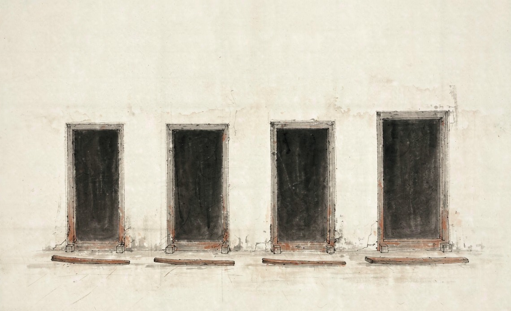
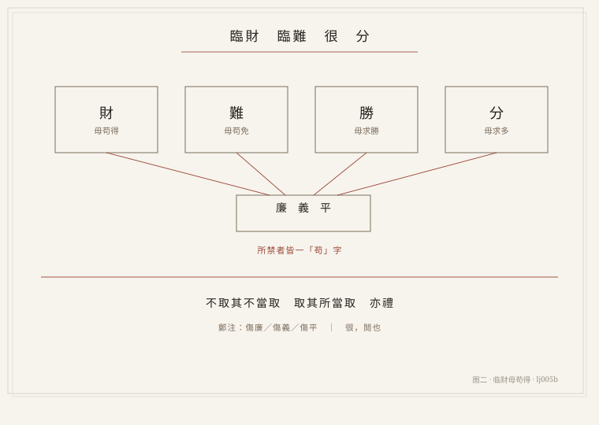

曲礼上 · 一·六 · 第 5 课
上一课讲取舍的时机，这一课讲取舍的底线，四条，全是「毋」。
说什么事：说财、难、争、分四处的「不占」。
落在哪一层：义。四条皆无可照做的仪，只有可守的界。
为何编在此位：散与迁说的是「能动」，此四条说的是「能不动」。一动一不动，才成完整的取舍。
【经】臨財毋苟得，臨難毋苟免。很毋求勝，分毋求多。
苟 苟且、随便，因便而得。两「毋苟」不是「毋得」「毋免」，是「毋苟得」「毋苟免」——所禁的从来不是得与免，是那个「苟」。
臨 面对。临财、临难，都是事到眼前的一刻；礼管的是那一刻的手，不是平日的话。
很 郑注：「很，鬩也，謂爭訟也。《詩》云：『兄弟鬩於牆。』」很不是狠，是争讼、是斗气。
分 分配，或名分所应得之份。郑注以「傷平」释之，可知指分配之平。
郑注三条界 「臨財毋苟得」为「傷廉」，「臨難毋苟免」为「傷義」，「很毋求勝、分毋求多」为「傷平」。廉、义、平三字，正是此四条所护的三样东西。
面对财物，不因顺便就取；面对危难，不因侥幸就避。与人争讼，不求压过对方；分配所得，不求多过自己那一份。
四「毋」护三样：廉、义、平。其所禁者皆一「苟」字。
第一层 苟是缝隙 财不会当面送到手上，多是「顺便」「没人看见」「反正该我」。难也不会正面逼来，多是「可以不去」「未必轮到我」。礼在这里下的不是决心，是缝：把「顺便」这条缝先堵住。
第二层 难与免 「毋苟免」不是「毋免」。危难当前，避是常情；礼所禁的是以非其道而避——推人下水、假手他人、装看不见。郑注下一「傷義」：义不是不怕死，是不拿别人换自己。
第三层 争与分 很与分，一是气，一是利。争讼求胜，胜了也伤和；分物求多，多了也伤平。二者所伤是同一个「平」字——不是平均，是彼此各得其分。礼在这里不劝人让尽，只劝人不多取一分。
| 左 | 右 |
|---|---|
| 毋苟得：不因顺便而取 | 毋苟免：不拿别人换自己 |
| 很毋求胜：争理不争面子 | 分毋求多：各得其分才是平 |
| 廉 | 义、平 |
| 不取其不该取 | 取其所当取，亦礼 |

